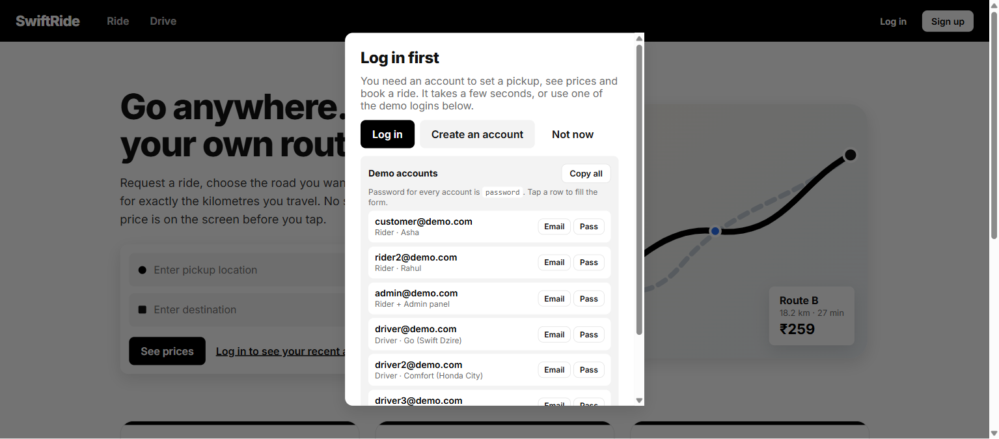
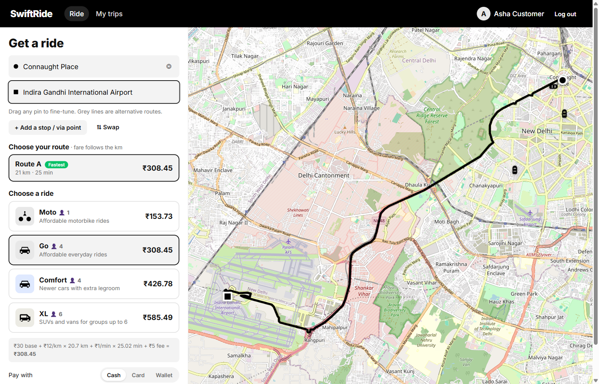
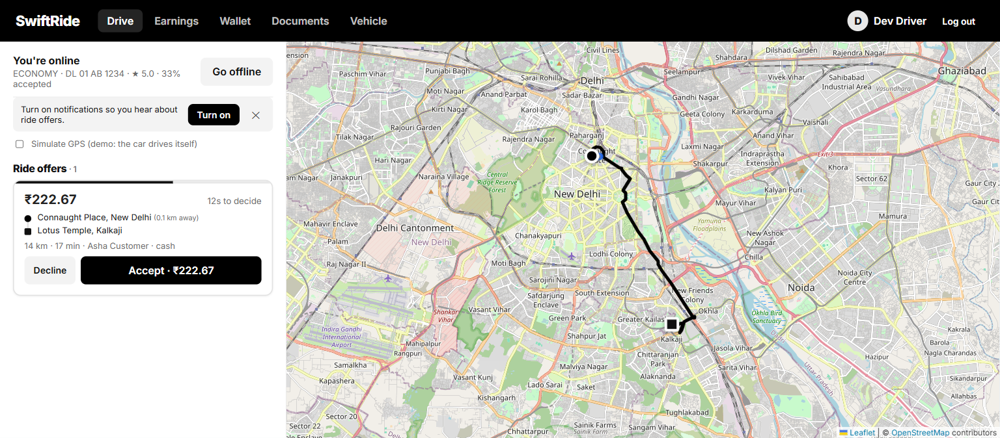
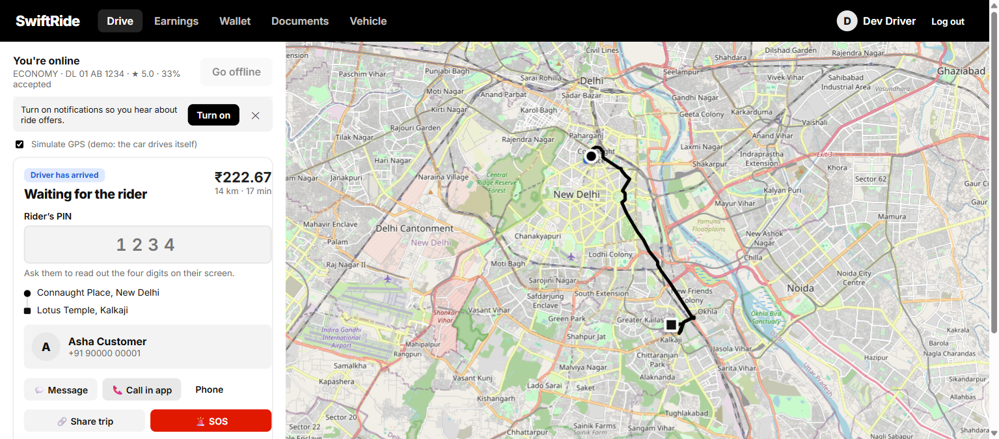
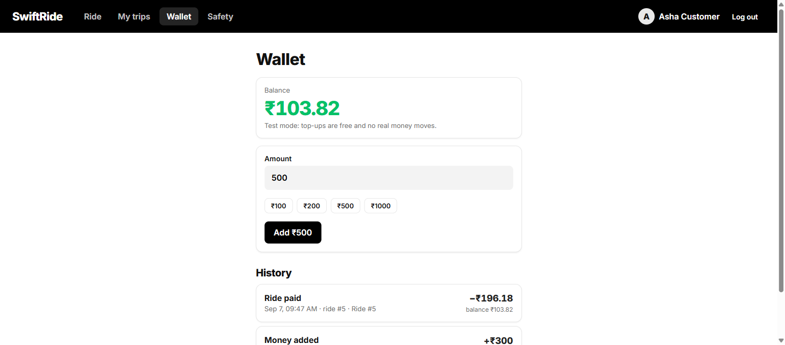
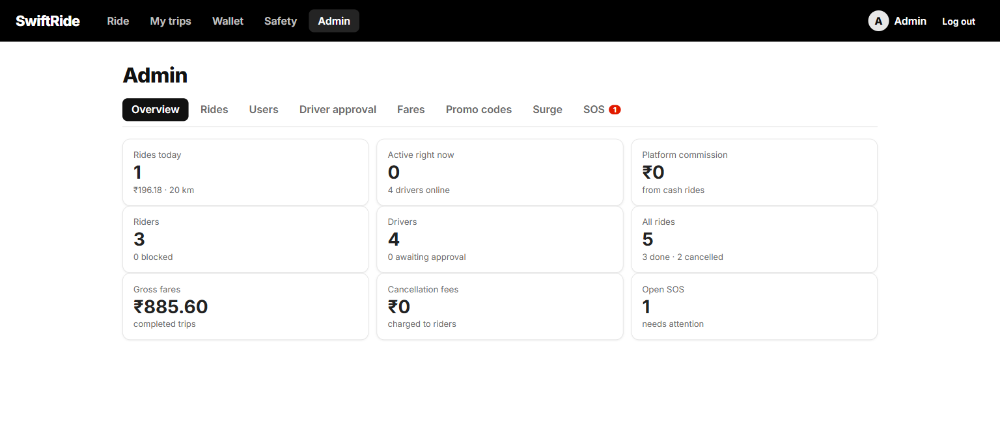
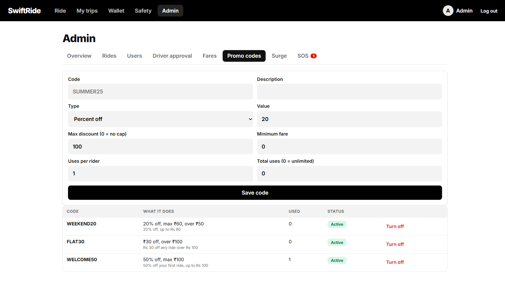
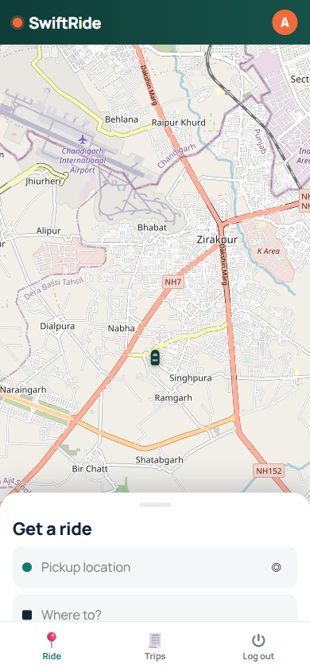

A ride-hailing app where the customer picks the route and pays for the kilometres of that route. Built from nothing: website, phone app, server, database, admin panel.
Short version: the app is complete enough to run a small pilot. What is missing is mostly paperwork and paid accounts, not code.
You can use it right now for: real rides between people you know, on your own phones, with cash payment. Everything works: booking, route choice, matching, tracking, chat, calls, PIN check, SOS, receipts, ratings, driver earnings, admin panel.
You cannot yet use it for: taking real card payments from strangers, or putting it on the Play Store. Both need accounts in your name and a bit of paperwork. Nothing more needs to be coded for the payment part; the code is written and waiting for your keys.
Every line below has been built and tested. The "who pays" column tells you whether that feature costs anything to run.
| Feature | What it does | Status | Cost |
|---|---|---|---|
| Pick your own route | The map shows every route option. Tap one and the price changes with the kilometres. This is the whole point of the app. | Done | Free |
| Add stops on the way | Tap "add a stop" and tap the map. The route bends through that point, up to 5 stops. | Done | Free |
| Drag the pins | Move the pickup, drop-off or any stop to fine-tune the road you take. | Done | Free |
| Instant place suggestions | Tap the box before typing and you already see your recent places, popular places, and 26 well-known Delhi landmarks. Each letter you type narrows the list at once. | Done | Free |
| Address search | Search any address in the world from three letters onwards. | Done | Free* |
| Four vehicle classes | Moto, Go, Comfort, XL. Each has its own base fare, per-km rate and minimum. | Done | Free |
| Transparent price | The full sum is printed on screen: base + per km × km + per min × min + booking fee. | Done | Free |
| Promo codes | Percent or flat discounts, with caps, minimum fares and per-rider limits. Three codes are set up already. | Done | Free |
| Surge pricing | Prices rise in busy areas, either from a zone you draw in the admin panel or automatically when riders outnumber cars. The base fare never surges. | Done | Free |
| Trip history and receipts | Every ride with the full fare breakdown. | Done | Free |
* Free on the public map servers, which are rate-limited. See the costs table for what happens when you grow.
| Feature | What it does | Status | Cost |
|---|---|---|---|
| Smart dispatch | A new ride is offered to the 3 nearest free drivers within 3 km, each with 20 seconds to answer. If nobody takes it, it widens to 6 km, then 10 km, then tells the rider nobody is free. Drivers no longer see rides they could never reach. | Done | Free |
| Offer card with countdown | The driver sees the fare, the distance to pickup, the route and a shrinking timer bar. Accept or Decline. | Done | Free |
| First one wins, safely | Two drivers tapping Accept at the same instant cannot both get the ride. Tested. | Done | Free |
| Acceptance rate | Each driver's accept percentage is tracked and used to break ties between two equally near drivers. | Done | Free |
| Driver drops out | If a driver cancels after accepting, the rider is put straight back into the search instead of being stranded, and the driver is charged a penalty. | Done | Free |
| Live tracking and ETA | The rider watches the car move and sees the real road minutes to arrival, recalculated as the driver moves. | Done | Free |
| Feature | What it does | Status | Cost |
|---|---|---|---|
| In-ride chat | Text messages between rider and driver, saved, delivered instantly. | Done | Free |
| In-app voice call | Call without giving out your phone number. Answer, decline, mute, timer. | Works on Wi-Fi | Free* |
| Phone fallback | A button that opens the normal phone dialer. | Done | Free |
| Trip PIN | The rider sees 4 digits. The driver must type them to start the trip, so nobody gets into the wrong car. The driver is never shown the PIN. | Done | Free |
| Share my trip | A link anyone can open, with no account, to watch the car move on a map. Shows no phone numbers and only the rider's first name. | Done | Free |
| SOS button | Alerts the admin panel instantly and shows the rider's saved emergency contacts for a one-tap call, plus a 112 button. | Done | Free |
| Emergency contacts | Save up to 5 people who appear when you press SOS. | Done | Free |
| Push notifications | "Driver accepted", "Driver arrived", new ride offers, new messages, incoming calls. Works with the app closed. | Done | Free |
* Calls connect on the same Wi-Fi and on most home networks. Across two different mobile networks they may fail without a relay server. See the costs table.
| Feature | What it does | Status | Cost |
|---|---|---|---|
| Wallet | Riders add money, drivers collect earnings. Every rupee in and out is listed with a running balance. | Done | Free |
| Test payments | A built-in fake payment gateway so you can test the whole top-up flow without any account or real money. | Done | Free |
| Real card / UPI payments | The Razorpay checkout is fully coded, including the signature check that stops fake payments. It switches on the moment you paste your two keys. | Needs your keys | 2% per payment |
| Platform commission | You keep 15% of every fare (changeable). On cash rides the commission is taken from the driver's wallet instead. | Done | Free |
| Cancellation fees | Free to cancel while searching and for 2 minutes after a driver accepts. After that the rider pays a fee that goes to the driver. A driver who cancels after accepting loses ₹20. | Done | Free |
| + and − everywhere | Green plus for money in, red minus for money out, on every screen, exactly as you asked. | Done | Free |
| Driver earnings breakdown | Fares collected, what reached the wallet, commission, penalties, take-home. The numbers always match the wallet balance. | Done | Free |
| Driver withdrawal | A driver can request a payout, which is recorded and deducted. | Recorded only | See below |
| Feature | What it does | Status | Cost |
|---|---|---|---|
| Rider and driver accounts | Separate sign-ups. Rider credentials cannot open the driver side and the other way round. | Done | Free |
| Stay logged in | Sessions last 90 days and renew themselves. A bad connection never logs you out. | Done | Free |
| Driver document upload | Licence, RC, insurance, permit and photo. Photos or PDFs up to 8 MB. | Done | Free |
| Driver approval | An admin approves or rejects each driver with a reason. Switch it on with one setting and no driver can go online until you approve them. | Done | Free |
| Admin panel | Eight screens: live figures, all rides, all users, driver approval, fare editing, promo codes, surge zones, SOS alerts. | Done | Free |
| Block a user | One tap. A blocked account cannot log in or go online. | Done | Free |
| Change fares live | Edit any tariff in the admin panel. New rides use the new price immediately, with no code change or restart. | Done | Free |
| Feature | What it does | Status | Cost |
|---|---|---|---|
| Website | Works in any browser, on phone and desktop. | Done | Free |
| Installable web app | Add to Home Screen on Android or iPhone and it opens full screen like a real app. | Done | Free |
| Android APK | A real signed Android app you can send to anyone and install. | Done | Free |
| Phone layout | Full-screen map with a bottom sheet and a bottom tab bar. | Done | Free |
| Docker | One command to run the whole thing on any server. | Done | Free |
| Automated tests | 27 tests covering fares, surge, promos, the wallet, dispatch and the ride state machine. | Done | Free |
Grouped by how much it matters. Nothing here is broken; these are things not built yet.
| Missing | Why it matters | Who unblocks it | Effort |
|---|---|---|---|
| Phone number verification (OTP) | Right now anyone can sign up with a fake phone number. For real users you want an SMS code. | You: SMS account | 1 day |
| Password reset | If someone forgets their password there is no way back in. | Me, once email or SMS is set up | Half a day |
| Live payments switched on | Code is done. Needs your Razorpay account and business KYC. | You: Razorpay | Minutes, after KYC |
| Automatic driver payouts | Withdrawals are recorded but you would transfer the money by hand. Razorpay has a payouts product that can do it automatically. | You: enable payouts | 1 day |
| Rate limiting and abuse protection | Stops someone hammering the server or brute-forcing passwords. | Me | Half a day |
| Proper database (Postgres) | The current database is a single file. Fine for a pilot, not for hundreds of rides a day. | Me + a hosting account | 1 day |
| Your own map servers | The free public route server asks you not to use it heavily. Once you have real traffic you need your own. | You: a server | 1 day |
| Missing | What it would add | Effort |
|---|---|---|
| Scheduled rides | Book a car for 6 am tomorrow. | 1 day |
| Ride sharing / pooling | Two riders going the same way share a car and split the fare. | 3–4 days |
| Call relay server (TURN) | Makes in-app calls work across any two mobile networks, not just Wi-Fi. | Half a day + a server |
| iPhone app | An App Store version. The project is already set up for it; it needs a Mac. | Needs a Mac 1 day |
| Play Store listing | So people can install from Google Play instead of a file. | You: $25 once 1 day |
| Tolls and waiting charges | Add toll costs and charge for time the driver waits. | 1 day |
| Hindi and other languages | Whole app in more languages. | 2 days |
| Demand heat map for drivers | Shows drivers where the riders are. | 1 day |
| Referral system | "Invite a friend, both get ₹100." | 1 day |
| GST invoices | Proper tax invoices for riders and drivers. | 1 day |
| Weekly driver statements | An email or PDF each week showing what they earned. | 1 day |
| Automatic testing on every change | Runs the tests by itself so a broken change never reaches you. | Half a day |
One honest note about the fares. The prices in the app (₹30 base, ₹12 per km for Go, and so on) are placeholders I chose to look plausible for Delhi. They are not researched. Before any real use, change them in the admin panel to numbers that actually make sense for your city and leave you a margin.
Everything below costs nothing and will keep costing nothing, no matter how many people use it.
The cheapest honest path: keep cash payments, run it on your own PC with a free tunnel, hand out the APK file directly. That is ₹0 a month and you can carry real passengers tomorrow. Add the paid parts one at a time, only when you actually need them.
Prices as I understand them in September 2026. Check each provider's current page before you commit, because they change.
| Thing | What it costs | When you need it | Needed now? |
|---|---|---|---|
| The app, database, maps, push, APK | ₹0 | Never costs anything | Already free |
| Running on your own PC | ₹0 | Testing and small pilots | Already working |
| Free tunnel (temporary web address) | ₹0 | Letting people outside your Wi-Fi use it | Already working |
| Domain name (e.g. swiftride.in) | ≈ ₹900 / year | When you want a permanent, professional address | Not yet |
| Small server to host it | ≈ ₹400–800 / month | When it must be online without your PC | Not yet |
| Razorpay (cards, UPI) | ₹0 to open · ≈ 2% per payment | When you want to take money in the app | When you decide |
| Razorpay payouts to drivers | ≈ ₹3–5 per transfer | When you stop paying drivers by hand | Not yet |
| SMS OTP (MSG91, Twilio…) | ≈ ₹0.15–0.25 per SMS | When strangers start signing up | Not yet |
| Google Play Store | $25 once (≈ ₹2,100) | When you want Play Store installs | Not yet |
| Apple App Store | $99 / year (≈ ₹8,300) + a Mac | When you want an iPhone app | Not yet |
| Own route server (self-hosted OSRM) | Software free · server ≈ ₹800 / month | Past a few hundred rides a day | Not yet |
| Call relay (TURN) | Free software · server ≈ ₹400 / month | If calls must work across mobile networks | Not yet |
Two realistic budgets.
Testing with friends: ₹0 per month. Nothing to buy. This is where you are now.
A small real service, 50–100 rides a day: roughly ₹1,500 a month (server + domain), plus about 2% of the money you collect, plus a one-time ₹2,100 if you want it on the Play Store.
Nothing here is urgent. The app works without all of it. This is the list for when you want to go further.
Nothing is pending from you to keep using what exists today.
cd C:\Projects\Ideas\Uber
npm run install:all # first time only
npm run seed # creates the demo accounts
npm run serve # website + app + API on http://localhost:4000Install dist-apk/SwiftRide-release.apk. Make sure the phone is on the same Wi-Fi as the PC. The login screen already has your PC's address filled in. For testing away from home, run npm run tunnel on the PC and paste the printed address into the app.
Password for every one of them is password. In the app you can tap "Copy all", or copy any email or password with one tap.
| Who they are | |
|---|---|
customer@demo.com | Rider (Asha) — starts with money in the wallet |
rider2@demo.com | Rider (Rahul) |
admin@demo.com | Rider and admin — use this one to open the admin panel |
driver@demo.com | Driver, Go class, white Swift Dzire |
driver2@demo.com | Driver, Comfort class, Honda City |
driver3@demo.com | Driver, XL class, Toyota Innova |
driver4@demo.com | Driver, Go class, Hyundai Aura |
WELCOME50 — half off, up to ₹100, once per riderFLAT30 — ₹30 off any ride over ₹100, five times per riderWEEKEND20 — 20% off up to ₹60A ride needs a driver who is online, of the same vehicle class, and within 3 km of the pickup. If nothing happens after you book, open the driver app, tap "Go online", and switch on "Simulate GPS" so the car sits at a sensible place. The seeded drivers are all in central Delhi.
All taken from the running app.








| Part | Chosen | Why |
|---|---|---|
| Website and app screens | React + TypeScript + Vite | Fast to build, catches mistakes before they run |
| Maps | Leaflet + OpenStreetMap | Free, no key, no vendor lock-in |
| Routing and addresses | OSRM + Nominatim | Free, gives real road routes and alternatives |
| Server | Node.js + Express | Same language as the front end |
| Live updates | Socket.IO | Instant offers, tracking, chat |
| Database | SQLite (built into Node) | One file, nothing to install; swappable for Postgres later |
| Logins | JWT + bcrypt | Standard, works for web and phone |
| Phone app | Capacitor | Wraps the same code into a real Android app |
| Notifications | Web Push (VAPID) | Free forever, no Firebase account |
| Calls | WebRTC | Direct phone-to-phone audio, no per-minute cost |
Written 7 September 2026. The full technical detail is in docs/BUILD_REPORT.md and the step-by-step test list is in docs/TESTING_GUIDE.md.
Prices are my best current understanding and should be checked with each provider before you commit money.